Írország - saját szervezésű programok
Guiness
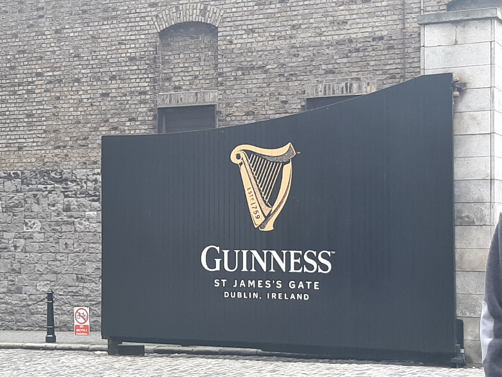Nyitásra odaértünk a Guinness sörfőzdéhez, ahova belépéskor rögtön elkülönítettek minket mert látták, hogy egy nagyobb társaság vagyunk. Első dolguk volt elkérni tőlünk a személyi igazolványainkat, mivel ez egy sörfőzde volt különféle jegyek voltak a belépéshez. A csapatból a tanárokon kívül még 3 ember kapott olyan belépőt (a többiek nagy sajnálatára), amivel kapott jogosultságot a látogatás végeztei 1 korsó sörhöz.
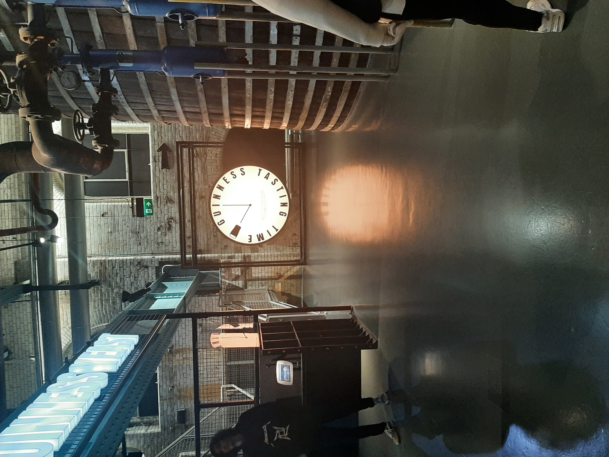Amint beértünk az épület belsejébe, megbeszéltük, hogy mindenki megy a saját tempójában és azzal, akivel szeretne. Az építmény belülről fantasztikus volt, az elrendezése és lenyűgözően volt kialakítva. Az egész bemutató sorozat 5 emeleten helyezkedett el, illetve az egész úgy volt kialakítva, hogy bár úgy érezted arra mész amerre akarsz mégis igazából végig vezetve voltál.
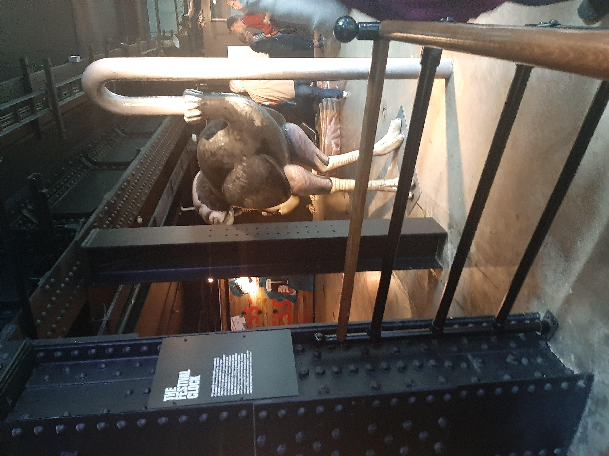A sör készítési folyamatának és múltjában való utazás közben szert tettünk egy kóstolóra, ami be volt építve a körbeveztésbe. Beinvitáltak egy szobába, ahol először gőzpárákon keresztül ízlelhettük meg a különféle ízletes söröket, majd kaptunk egy kis kóstolót, amiről elmondták, hogy mikor hogyan szagoljuk, hogy a különböző ízeket és aromákat is megérezzük belőle. Aztán végső befejezésként felmásztunk egy nagyon nagy és meredek lépcsőn aminek a végén felértünk a Guinness kupolába, ahonnan az egész környéket be lehet látni. Csodálatos volt a kilátás és szerencsére tiszta és szép idő volt aznap. Ott mindenki aki jogosult volt rá választhatott egy fajta korsó sört, amit jóízűen elfogyaszthatott a kupolában a tájban gyönyörködve.
Howth
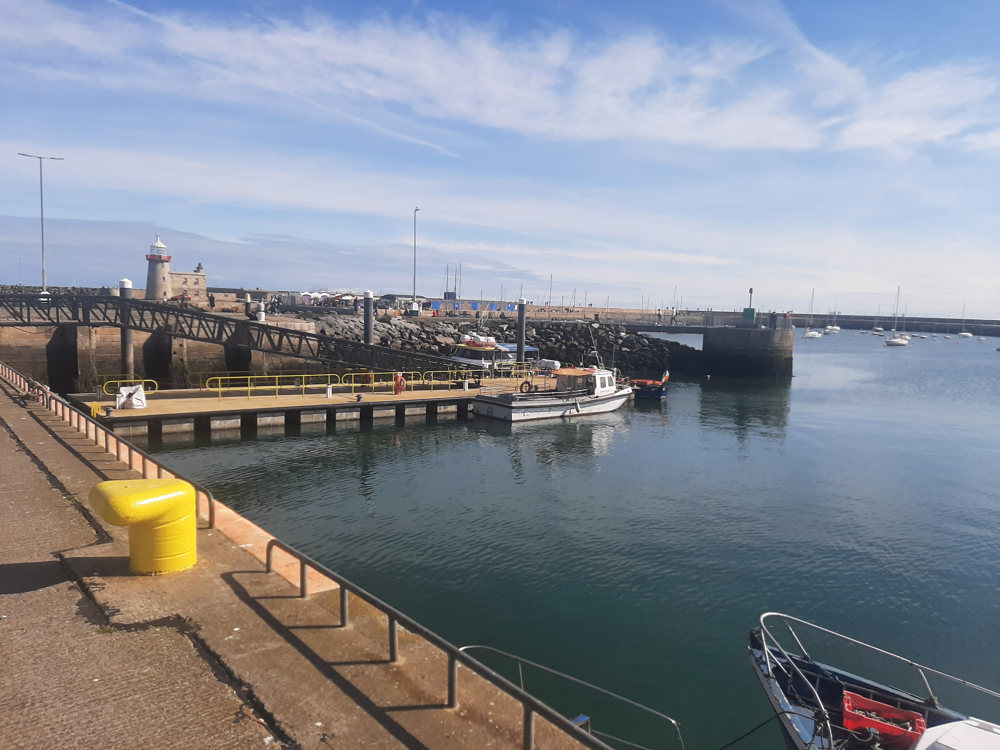 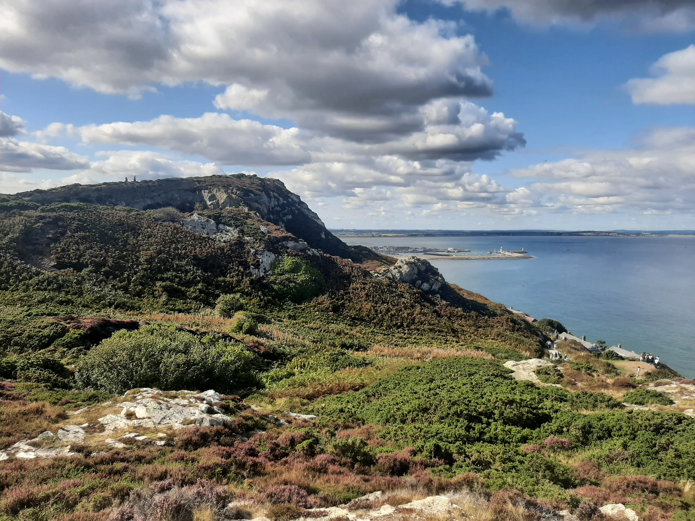Vasárnap reggel egy vonatállomás megállójában a velünk párhuzamosan Dublinban tartózkodó olasz diákokkal mentünk közösen, hogy megismerhessük őket. Vonattal, majd busszal odaértünk Howthba, ami egy kis kikötőváros. Ott nagyon ízes tengeri finomságokat lehetett kapni, illetve egy kicsi bazár is található volt, ahol mindenféle szuveníreket lehetett venni. Egy alapos városnézés után az olasz diákokkal közösen felmásztunk a közeli partmenti hegyekre. Innen gyönyörű rálátásunk volt a tengerre. Délután visszaindultunk, elköszöntünk az olasz diákoktól, és hazamentünk.
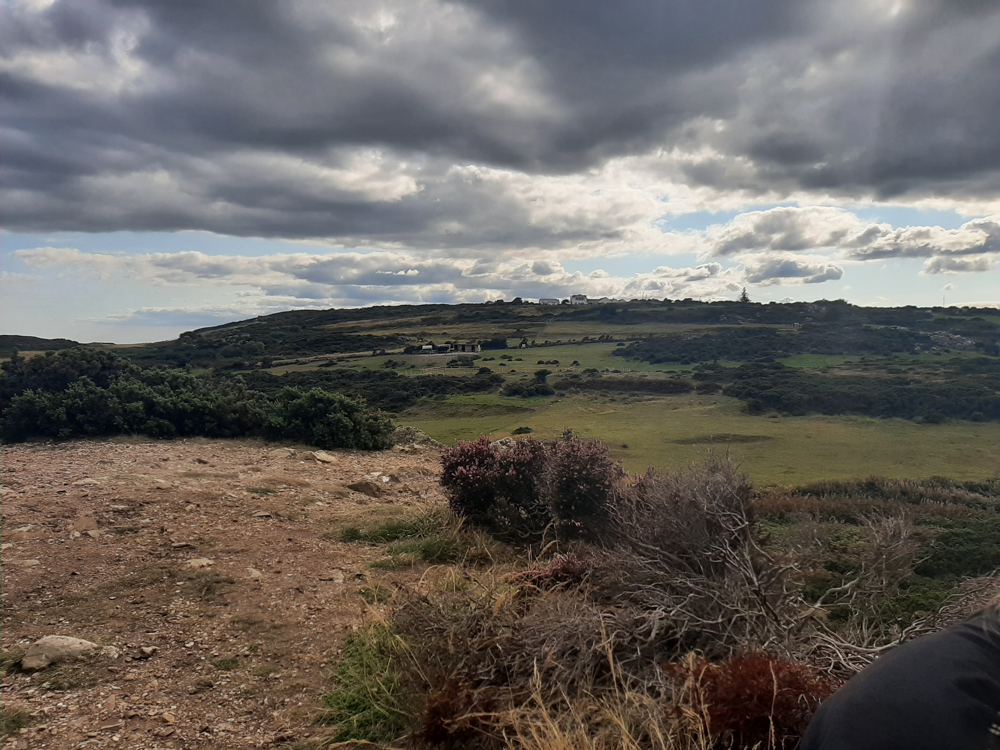 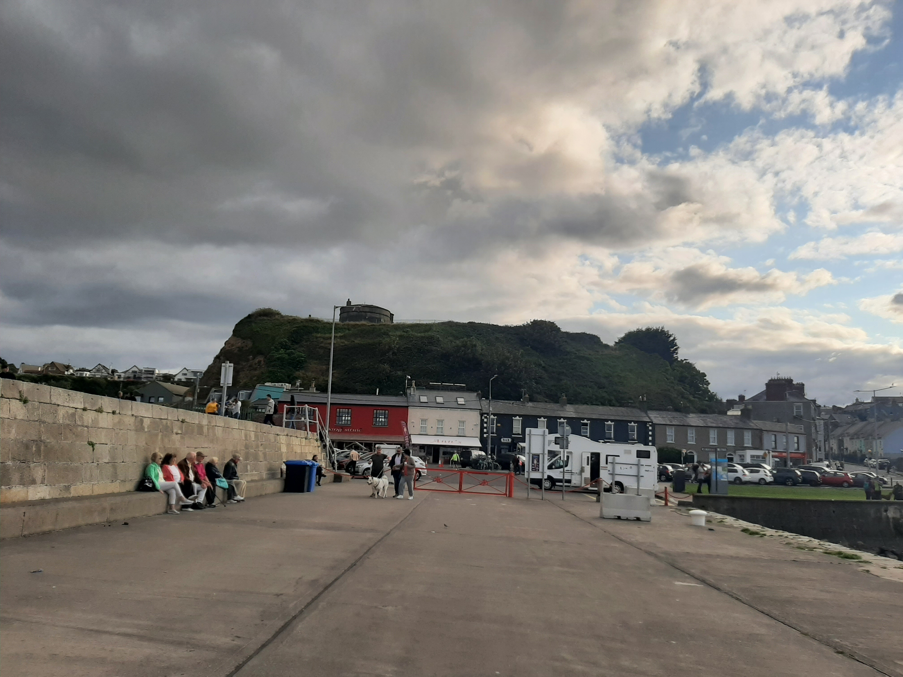Trinity College
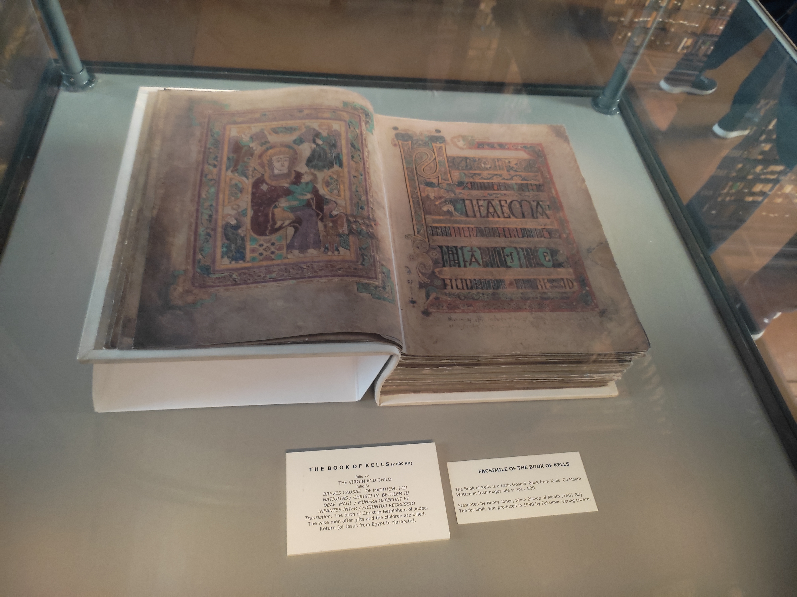 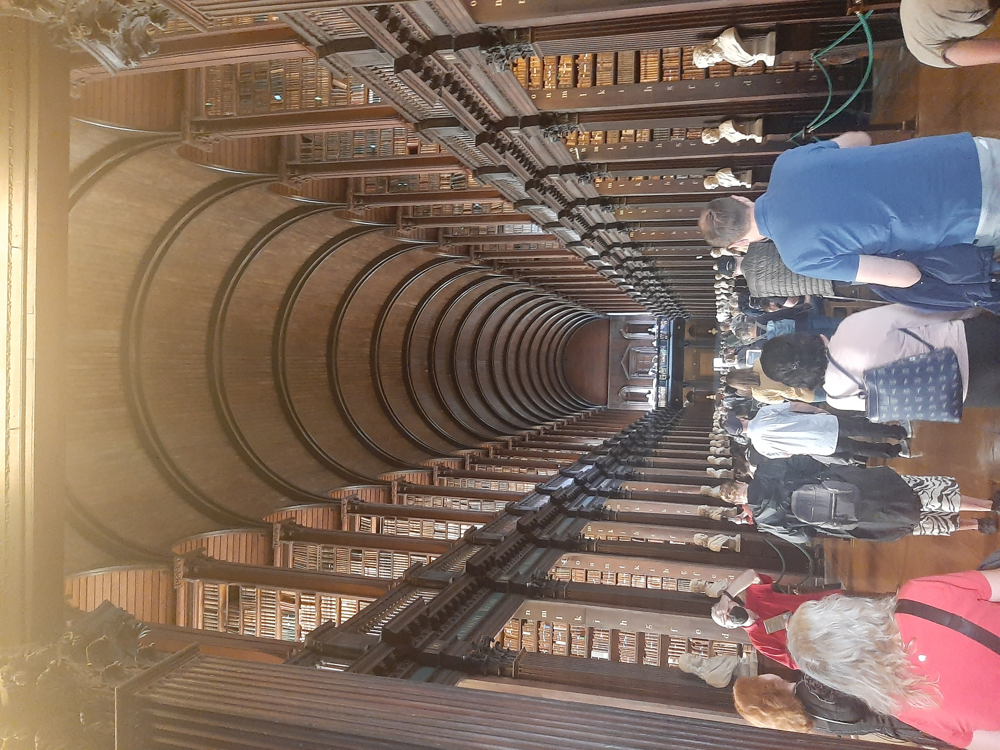
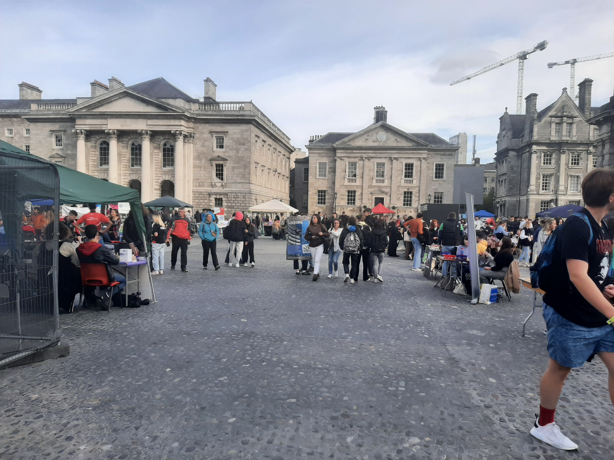
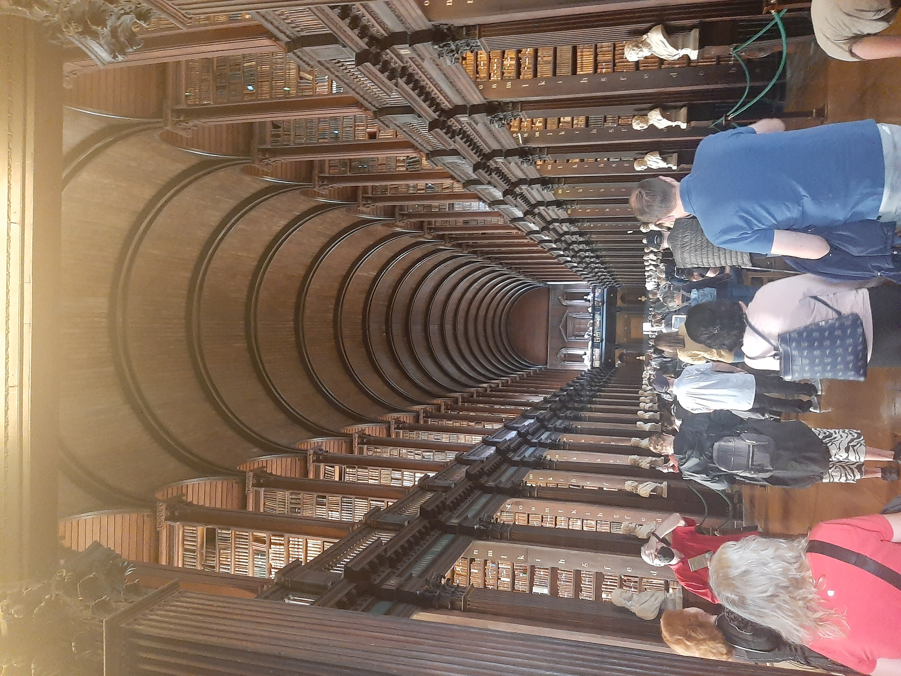
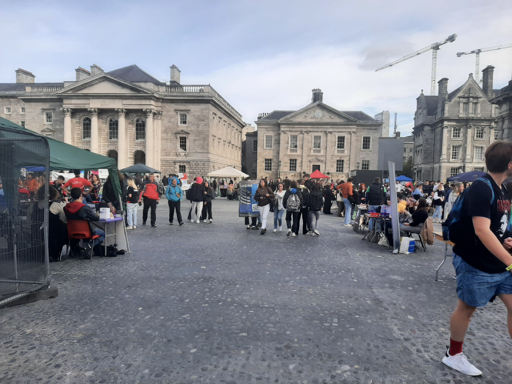
A Trinity College egy igazán különleges hely. Pont akkoriban látogattuk meg, amikor a szakkör választások voltak az iskolában és rengeteg sátor között nézhettük meg milyen lehetőségeik vannak az oda járó diákoknak. A főiskola könyvtárába belépve egy elképesztő különleges szag csapta meg az orrunkat. Annyira kellemes volt, hogy mikor már megszoktuk páran el is gondolkodtunk, hogy kimegyünk, csak hogy újra bemehessünk megérezni azt a szagot.
National Museum of Ireland, EPIC
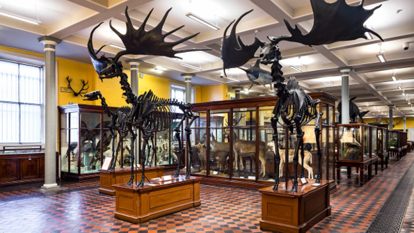Az érdeklődés megoszlása miatt csapat kettévált. Az egyik fele a EPIC múzeumot, a másik fele az ingyenesen látogatható National Museum-ot meg. Belépéskor két hatalmas Jávorszarvas csontváz fogadott, a vitrinek mögött különféle rágcsálókat és halakat láttunk . A múzeumban minden Írországban őshonos állat megtalálható volt, vagy kitömött formában, vagy csontvázként. Mindegyik állathoz tartozott egy részletes leírás, ha esetleg már kihaltak volna, akkor a kihalásuk oka. Sajnos a második emelethez nem lehetett hozzáférni, mivel átépítés alatt volt. Ez után a múzeum után délután szabadfoglalkozás várt minket.

Az EPIC múzeum meglátogatása a saját zsebünkből vált lehetővé. A múzeum egy pláza alatt helyezkedik el. Gyönyörű volt és hangulatos, egyik szobából a másikba átlépve egy egészen új stílusba és témába csöppentünk. Rengeteg interaktív lehetőség volt, de sajnos nem tudtunk mindent megnézni. Kaptunk egy elektronikus idegenvezetőt, amely a szobákra bontva beszélt nekünk az azzal kapcsolatos témákról, emellett rengeteg szöveget olvashattunk és képekkel és animációkkal volt tele a fal. A múzeum maga az ír más országokba való kivándorlás történetét mutatja be.